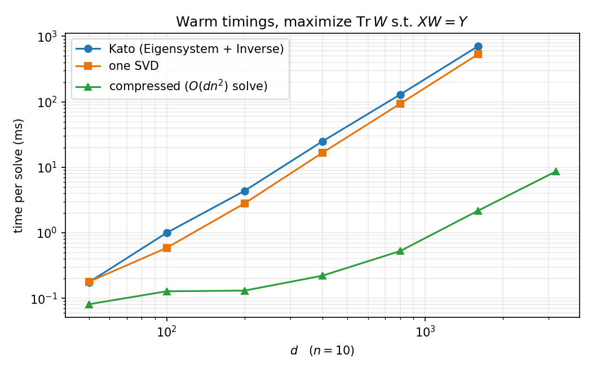

The Trace-Maximal Orthogonal Completion
A closed form for maximizing \(\operatorname{Tr} W\) over orthogonal \(W\) with \(XW = Y\) — a follow-up to A. Kato's answer on Mathematica StackExchange.
The problem: given \(n \times d\) matrices \(X, Y\) with orthonormal rows (\(n \le d\)), find an orthogonal \(W\) with \(XW = Y\) and \(\operatorname{Tr} W\) as large as possible. Kato's answer reduced it to a small dense subproblem and solved that with an eigendecomposition. This note pushes the same idea to its end point: the whole problem has a one-SVD closed form, the geometry behind it fits in two pictures, and exploiting it brings the cost down to \(O(dn^2)\) for the solve.
1 · From trace to distance
For orthogonal \(W\),
$$\lVert W - I \rVert_F^2 \;=\; 2d - 2\operatorname{Tr} W,$$so maximizing the trace is the same as finding the feasible orthogonal matrix closest to the identity: a Procrustes problem with a linear constraint. Everything that follows is a consequence of this one reformulation.
2 · The feasible set has exactly one knob
Let \(U\) and \(V\) be orthonormal bases of the row null spaces of \(X\) and \(Y\). If \(W\) is feasible, the rows of \(UW\) are orthonormal and orthogonal to the rows of \(Y\) — because \(UWY^\top = UWW^\top X^\top = UX^\top = 0\) — so \(UW = QV\) for some orthogonal \(Q\), and every feasible \(W\) is
The objective splits accordingly: \(\operatorname{Tr} W = \operatorname{Tr}(X^\top Y) + \operatorname{Tr}(Q\,VU^\top)\). By von Neumann's trace inequality, \(\operatorname{Tr}(QM) \le \sum_i \sigma_i(M)\) over orthogonal \(Q\), with equality at an orthogonal polar factor of \(M^\top\): if \(VU^\top = E\Sigma F^\top\), take \(Q = FE^\top\). (This replaces the Eigensystem + Inverse + matrix-square-root route — one SVD, no invertibility assumption, and orthogonality error around \(10^{-15}\) instead of \(10^{-13}\).)
orthogonalSolverSVD[X_?MatrixQ, Y_?MatrixQ] := Module[{U, V, e, s, f},
U = NullSpace[X]; V = NullSpace[Y];
If[U === {}, Return[Transpose[X] . Y]]; (* n == d: W is determined *)
{e, s, f} = SingularValueDecomposition[V . Transpose[U]];
Transpose[X] . Y + Transpose[U] . f . Transpose[e] . V];3 · All the action lives in a ≤ 2n-dimensional subspace
Every optimal \(W\) fixes the orthogonal complement of \(S = \operatorname{rowspan}(X) + \operatorname{rowspan}(Y)\) pointwise: an optimal \(Q\) aligns the two null spaces along their principal vectors, and \(S^\perp\) lies in both. In a basis adapted to \(S\), the optimal \(W\) is block diagonal —
orthogonalSolverFast[X_?MatrixQ, Y_?MatrixQ] := Module[{d, B, Ws},
d = Last@Dimensions@X;
B = DeleteCases[Orthogonalize@Join[X, Y], v_ /; Norm[v] < 10^-8];
Ws = orthogonalSolverSVD[X . Transpose[B], Y . Transpose[B]];
IdentityMatrix[d] + Transpose[B] . (Ws - IdentityMatrix@Length@B) . B];The solve is \(O(dn^2)\); only assembling the dense \(d \times d\) answer costs \(O(d^2 n)\). If \(d\) is truly large, keep \(W\) in the factored form \(I + B^\top(W_s - I)B\) and never materialize it.
4 · The n = 1 case, and a small surprise
For a single pair \((x, y)\) with \(c = x \cdot y\), the optimal trace is \(d - 2 + 2\max(c, 0)\), and the optimum depends on the sign of \(c\):
The same applies in general: the maximizer over \(O(d)\) frequently has \(\det W = -1\) — the question's own SeedRandom[1] instance is an example. If your application needs a proper rotation, check the result: when \(\det W = -1\), replace \(FE^\top\) by \(F\,\mathrm{diag}(1,\ldots,1,-1)\,E^\top\) (a Kabsch-style flip of the smallest singular direction), at a cost of exactly \(2\sigma_{\min}(VU^\top)\) in trace.
5 · Benchmarks
All three closed-form solvers agree to \(10^{-14}\) in trace; the differences are speed and constraint accuracy. Warmed-up timings (RepeatedTiming, M-series laptop, \(n = 10\)):

| solver, (n, d) | Tr | |XW − Y| | |W⊤W − I| | time |
|---|---|---|---|---|
| Kato (10, 100) | 82.78517434417 | 8.5e-16 | 1.1e-13 | 1.1 ms |
| one SVD (10, 100) | 82.78517434417 | 9.3e-16 | 4.1e-15 | 0.6 ms |
| compressed (10, 100) | 82.78517434417 | 1.1e-15 | 2.8e-15 | 0.12 ms |
| compressed (10, 2000) | 1980.55 | 2.7e-15 | 4.8e-15 | 3.3 ms |
SeedRandom[1] instance, Minimize reports 0.82896 — slightly above the true optimum 0.828952. Its answer violates orthogonality by \(1.7 \times 10^{-5}\), which buys the extra trace; the closed form is exactly feasible.
6 · Everything in one block
(* maximize Tr[W] over orthogonal W subject to X.W == Y;
X, Y: n x d with orthonormal rows, machine precision *)
orthogonalSolverSVD[X_?MatrixQ, Y_?MatrixQ] := Module[{U, V, e, s, f},
U = NullSpace[X]; V = NullSpace[Y];
If[U === {}, Return[Transpose[X] . Y]];
{e, s, f} = SingularValueDecomposition[V . Transpose[U]];
Transpose[X] . Y + Transpose[U] . f . Transpose[e] . V];
orthogonalSolverFast[X_?MatrixQ, Y_?MatrixQ] := Module[{d, B, Ws},
d = Last@Dimensions@X;
B = DeleteCases[Orthogonalize@Join[X, Y], v_ /; Norm[v] < 10^-8];
Ws = orthogonalSolverSVD[X . Transpose[B], Y . Transpose[B]];
IdentityMatrix[d] + Transpose[B] . (Ws - IdentityMatrix@Length@B) . B];
(* test on the question's instance *)
SeedRandom[1];
{n, d} = {2, 4};
W0 = RandomVariate@CircularRealMatrixDistribution@d;
X = Orthogonalize@RandomVariate[NormalDistribution[], {n, d}];
Y = X . W0;
W = orthogonalSolverSVD[X, Y];
{Tr[W], Norm[X . W - Y], Norm[Transpose[W] . W - IdentityMatrix[d]]}
(* {0.828952, 3.5*10^-16, 8.0*10^-16} *)